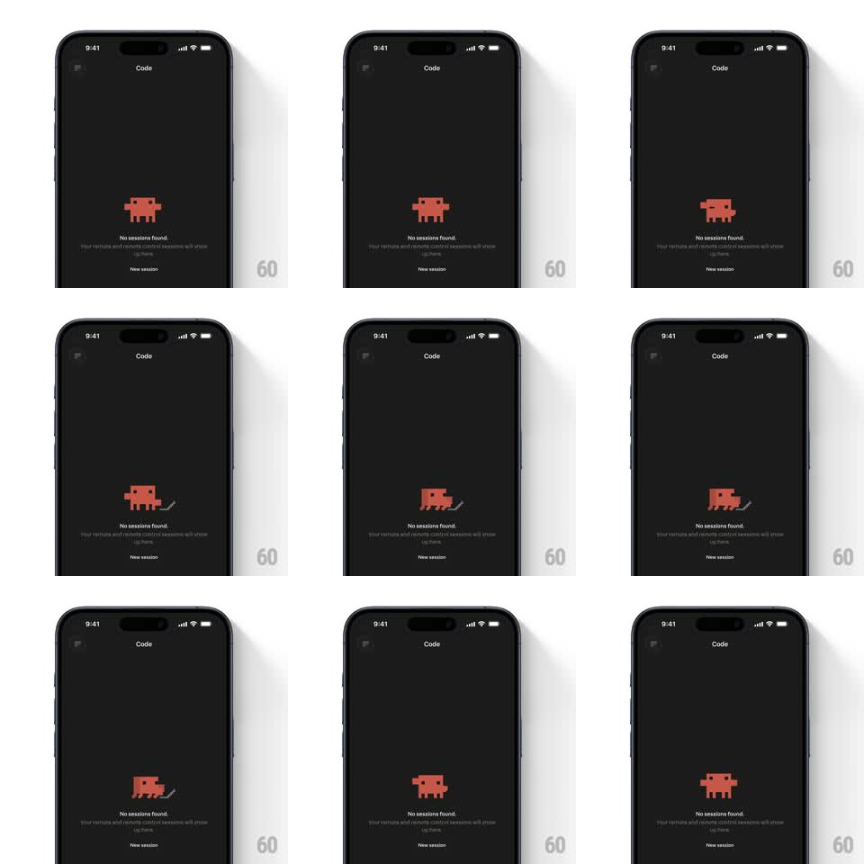

Media
Frame-by-frame

Rebuild this animation 1:1: Claude Code's empty state - a pixel-art crab mascot idles above the "No sessions found" copy, and a cursor arrow drifts in, prompting the mascot to hop and squint in a looping beat.

Rebuild this animation 1:1: Claude Code's empty state - a pixel-art crab mascot idles above the "No sessions found" copy, and a cursor arrow drifts in, prompting the mascot to hop and squint in a looping beat. ## Integration Integration: stack-agnostic spec - springs given as stiffness/damping, timed motions as duration + curve; map every value to your framework and animation library of choice. ## Scene Dark "Code" screen: hamburger and title up top, center stage the orange pixel-art mascot, "No sessions found." headline with subcopy, and a "New session" text button below. ## Motion spec Pattern: pixel mascot idle loop with a visiting cursor. - Base idle: the mascot bobs 2-3px on a 3s cycle with a subtle squash at the bottom of the bob (scaleY 0.96 for 150ms). - Every loop, a pixel cursor arrow slides in from the right (300ms, ease-out), hovers, and the mascot reacts: it hops (up 8px, spring ~300/16) and its eyes squint (eye pixels compress for 200ms). - The cursor drifts away (250ms) and the mascot settles back into the bob. - Legs shuffle one pixel step left-right every ~800ms for a retro crawl feel. ## Calibration - Everything snaps to the pixel grid - motion happens in whole-pixel steps, no sub-pixel smoothing. - The reaction hop is the payoff: quick, one bounce, back to calm. ## Reduced motion Static mascot; the cursor appears without the hop or squint. ## Don't miss - The mascot is chunky low-res pixel art - aliased edges are intentional, never anti-aliased. - Text and button never move; only the mascot and cursor play.